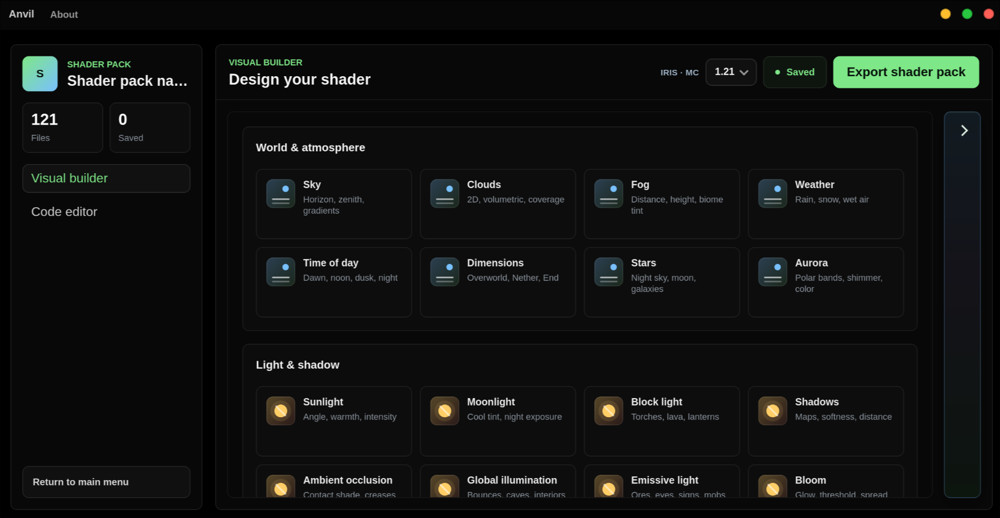
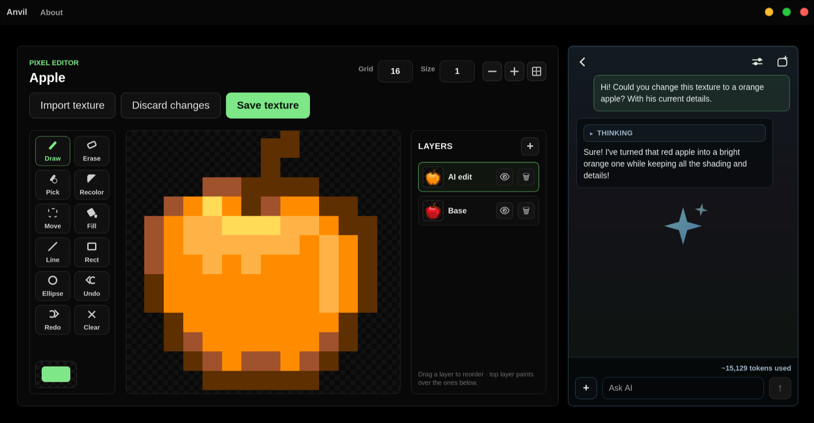
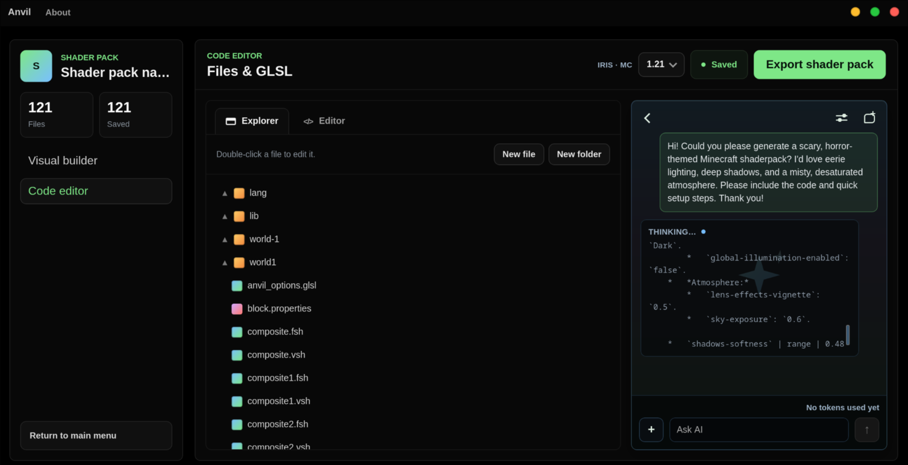
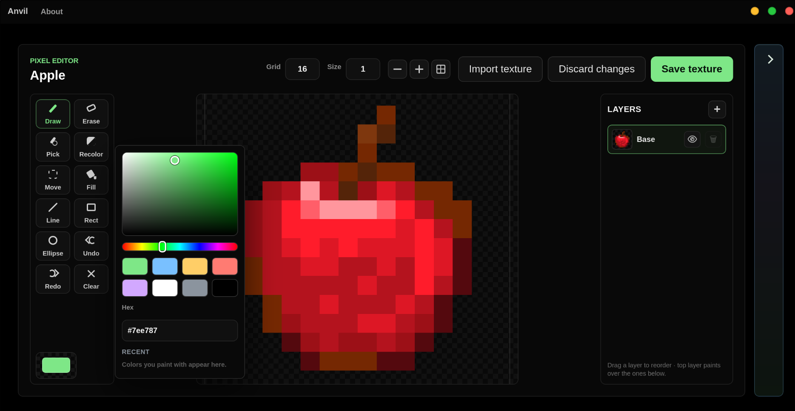
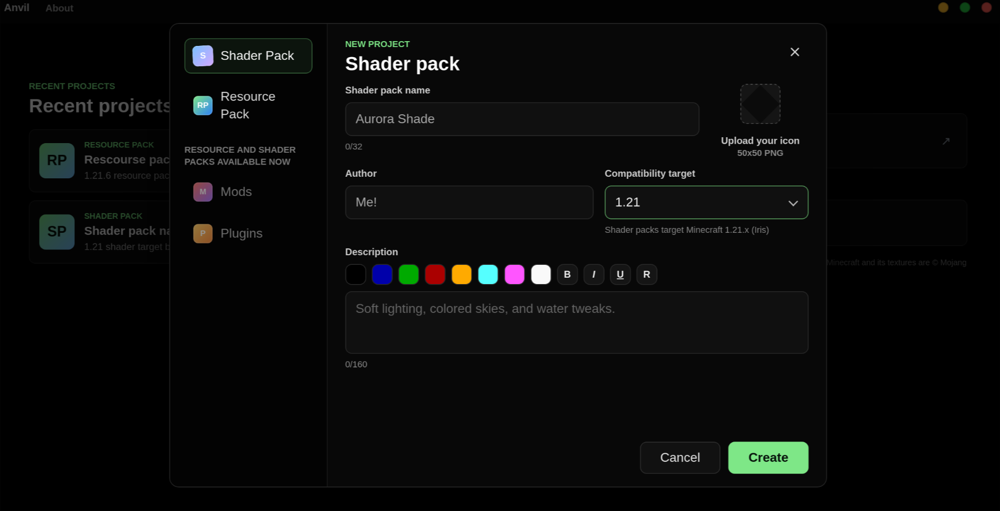

macOS
Download
All-in-one development platform for Minecraft
Anvil
Build resource packs and shader packs in one app. Paint textures with a layered pixel editor, design a complete Iris shader pack visually — sky, shadows, water, bloom and hundreds more options — then drop into the GLSL code editor when you want full control. Optional AI assistants in both workspaces answer questions and make edits right on your canvas.
Loading the latest release…





Download
Pick your platform — links point to the latest release.
Install
macOS
Open the .dmg and drag Anvil to Applications.
The build isn't notarized yet, so the first launch needs right-click → Open (or System Settings → Privacy & Security → Open Anyway).
Windows
Run the .exe installer and follow the prompts.
SmartScreen may warn on an unsigned build — choose More info → Run anyway.
Linux — AppImage
chmod +x Anvil_*.appimage
./Anvil_*.appimageLinux — Debian / Ubuntu
sudo apt install ./Anvil_*.debBuild from source
git clone https://github.com/NssIs/Anvil.git
cd Anvil
npm install
npm run tauri dev # run it
npm run tauri build # build installers for your OSWhat's inside
- Resource packs & shader packs available now — mods and plugins are next on the roadmap.
- Visual shader builder — design a complete Iris shader pack for Minecraft 1.21.x: sky, clouds, fog, shadows, ambient occlusion, water, bloom, depth of field and hundreds more options, exported ready to play.
- GLSL code editor — syntax-highlighted shader files with an explorer, drag-and-drop organizing, and automatic saving; files you hand-edit are never overwritten by the builder.
- AI assistants, your keys — optional helpers in both workspaces (Ollama for fully local, OpenRouter, or Google AI Studio). They answer questions, tweak shader options, and paint texture edits as an undoable layer.
- Layered pixel editor — layers, fill/line/shape tools, undo/redo, one-stroke recolor that keeps shading, zoom and pan, eyedropper, and a custom color picker.
- Real vanilla textures — pulled from Mojang's official client jar for any Minecraft version, on demand.
- Per-project & safe export — each pack is isolated, and only the textures you actually edited get exported.